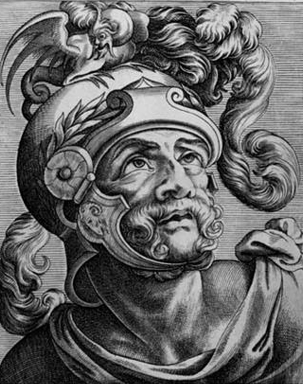

En by av herdar på Palatinen växte till en storstad med en miljon invånare och ett rike med
50–100 miljoner människor, från Skottland till Eufrat. Rom byggde vägar, lagar och legioner, men bar
också på inre motsättningar som till slut blev dess undergång. Följ hela förloppet i tidslinjen, möt personerna i galleriet
och undersök de fem paradoxer som löper genom Roms historia.
Tidslinjen
Varje händelse bär en av tre färger: brons för politik, rött för militär & expansion,
lager för liv & ekonomi. Kursiverade ord med prickad linje är begrepp: tryck på dem för en förklaring.
De gyllene ikonerna markerar Roms fem paradoxer.
I · KUNGADÖMET753–510 f.Kr. · myternas och kungarnas Rom
753 f.Kr.POLITIK
Rom grundas: myt möter arkeologi
Enligt sägnen grundade Romulus staden på Palatinen, en av Roms kullar. Utgrävningar visar att platsen
verkligen var bebodd vid den här tiden. Men själva berättelsen, där Romulus dödar sin egen bror Remus, tror
forskare idag inte är sann. Den handlar snarare om något romarna bar med sig långt senare: rädslan för
inbördeskrig, bror mot bror.
KÄLLORNA ÄR OENSEForskare är oeniga om hur Rom uppstod. Utgrävningarna säger en sak, de romerska författarna en annan, och författarna skrev ofta in sin egen tids idéer i det förflutna. Romarna gjorde faktiskt om sin historia hela tiden, som ett bygge som aldrig blev färdigt.
ca 753–510 f.Kr.POLITIK
Kungarnas Rom
I mer än 200 år styrdes Rom av kungar (reges). Vid kungens sida fanns ett råd av äldre män
(senex), som blev början till . De sista
kungarna var etrusker, ett folk norr om Rom, och mycket av stadens tidiga religion och byggnadskonst kom därifrån.
ca 510 f.Kr.POLITIK
Lucretia och monarkins fall
Den siste kungen, Tarquinius Superbus (”den högmodige”), beskrivs som en typisk tyrann. Enligt legenden
våldtar en av hans söner adelskvinnan Lucretia, och det blir droppen. Kungen drivs bort och romarna skapar
, ”det gemensamma” – en stat som tillhör alla
medborgare, inte en enda kung.
KÄLLORNA ÄR OENSERomarna själva berättade om ett hjältemodigt uppror lett av Brutus. Men andra, äldre spår pekar åt ett annat håll: att det snarare var en maktkamp mellan etruskiska städer, där kungen Lars Porsenna kan ha varit den som egentligen avgjorde saken.
II · REPUBLIKEN & STÅNDSKAMPEN510–264 f.Kr. · statens grundregler byggs för att hindra envälde
509 f.Kr. →POLITIK
Republikens grundregler
Allt byggdes så att ingen kung skulle kunna komma tillbaka. I stället för en kung valdes två ledare, konsuler,
och bara för ett år i taget. De hade , rätten att
leda armén, och gick genom staden med tolv vakter som bar ,
ett knippe spön som visade deras makt. Senaten, ett råd av tidigare ledare, kunde formellt bara ge råd, men i
praktiken följdes deras beslut nästan alltid som lag.
På folkförsamlingens möten röstade man efter förmögenhet. De rikaste röstade först, och ofta var saken redan
avgjord innan de fattiga ens fick säga sitt.
494–287 f.Kr.POLITIK
Ståndskampen
Rom var delat i två grupper. var en liten
överklass som höll all makt för sig själva. var
alla andra, allt från rika köpmän till fattiga bönder. När plebejerna fick nog använde de sitt starkaste vapen:
de i massor och vägrade arbeta
och slåss förrän de fick sin vilja igenom.
Det gav resultat. Plebejerna fick egna ledare, ,
som ingen fick röra () och som kunde stoppa
beslut de ogillade. Till slut kunde även plebejer bli konsuler.
ca 450 f.Kr.POLITIK
De tolv tavlornas lag
För första gången skrevs Roms lagar ner och sattes upp offentligt så att alla kunde se dem. Innan dess kunde
domarna, som var patricier, döma lite som de ville. Nu fanns reglerna svart på vitt. Det var en seger för
plebejerna, och starten på den romerska rätt som fortfarande påverkar Europas lagar idag.
Republikens vardagLIV & EKONOMI
Paterfamilias och klientväsendet
Familjen var samhällets minsta byggsten, och i den bestämde fadern allt. Som
hade han enligt lagen
() nästan total makt över fru och barn.
Samhället hölls också ihop av : rika och mäktiga
personer skyddade och hjälpte fattigare, som i gengäld var lojala och röstade på dem.
Romerska kvinnor var ändå mycket friare än grekiska. De kunde röra sig ute, äga egendom, driva rättegångar och
arbeta som till exempel läkare eller lärare.
III · EXPANSIONEN264–146 f.Kr. · Medelhavet blir ett romerskt innanhav
300-talet f.Kr. →MILITÄR
Manipular-legionen tar form
Först stred romarna i en tät, orörlig formation som grekerna, men den var klumpig i kuperad terräng. De gick
över till , där armén delades i mindre
grupper som kunde röra sig fritt och smart. Alla soldater fick samma utrustning: kastspjutet
och det korta svärdet
. Träningen var stenhård, och varje kväll på marsch
byggde soldaterna ett befäst läger.
264–216 f.Kr.MILITÄR
Puniska krigen och Hannibal vid Cannae
Kriget mot handelsstaden Karthago handlade om överlevnad. Fältherren Hannibal tog sin armé över Alperna och
krossade romarna vid Cannae 216 f.Kr. i ett fruktansvärt blodbad. Men Rom gav aldrig upp. Tack
vare sin envishet och sina enorma reserver av soldater orkade Rom vinna till slut.
KÄLLORNA ÄR OENSEVarför växte Rom så mycket? Vissa forskare menar att Rom mest försvarade sig och sina vänner, och drogs in i krig mot sin vilja. Andra menar tvärtom att romarna var aggressiva och giriga och krigade för makt och pengar.
146 f.Kr.MILITÄR
Karthago faller, Rom härskar över Medelhavet
I det sista kriget mot Karthago brändes staden till grunden. Samma år förstördes den grekiska staden Korinth.
Nu var Rom ensam herre över hela Medelhavet. Men segern förändrade Rom inifrån: alla rikedomar och krigsfångar som
strömmade in skulle snart skapa nya, farliga problem.
100-talet f.Kr.LIV & EKONOMI
Latifundia: slavekonomins genombrott
Vinsterna från krigen gick till överklassen, som köpte upp mängder av jord och drev enorma gods med slavar,
så kallade . Hundratusentals krigsfångar slet i
gruvor och på gårdarna; en enda rik senator kunde äga 400 slavar bara i sitt stadshus. Samtidigt slogs de vanliga
bönderna ut, de som hade varit ryggraden i Roms armé, och tvingades flytta in till staden utan arbete.
IV · REPUBLIKENS KRIS133–27 f.Kr. · ”den romerska revolutionen”
133–121 f.Kr.POLITIK
Bröderna Gracchus: våldet bryter in i politiken
Bröderna Tiberius och Gaius Gracchus försökte dela ut jord till de fattiga bönder som slagits ut. Det gjorde
överklassen rasande, och båda bröderna mördades. Nu var en osynlig gräns passerad: politik i Rom kunde numera
avgöras med våld. Det var början på slutet för republiken.
107 f.Kr.MILITÄR
Marius öppnar armén för de egendomslösa
Tidigare måste en soldat äga jord för att få gå med i armén. Generalen Marius tog bort det kravet, så att även
fattiga kunde bli soldater. Det gav Rom en stark yrkesarmé, men med en farlig hake: soldaterna blev nu lojala mot
generalen som lovade dem lön och jord, inte mot staten. Snart skulle de vändas mot Rom självt.
82 f.Kr.POLITIK
Sulla tågar mot Rom
Det som ingen trott var möjligt hände: en romersk general marscherade med sin armé mot själva Rom. Sulla tog
makten som och införde
: listor med namn på fiender som fritt fick
dödas, medan staten tog deras egendom. Nu hade någon visat vägen, och nästa generation skulle följa den.
73–71 f.Kr.LIV & EKONOMI
Spartacus och slavsamhällets uppror
Gladiatorn Spartacus ledde det största slavupproret i Roms historia. När det slogs ner korsfästes 6 000 slavar
längs vägen Via Appia, mil efter mil, som en varning till andra. Ändå fanns det i samma samhälle en väg ut: genom
kunde en slav bli fri
() och till och med romersk medborgare. Något sådant
fanns inte i Grekland.
60 f.Kr.POLITIK
Första triumviratet
Tre av Roms mäktigaste män, fältherren Pompejus, den stenrike Crassus och den ambitiöse Julius Caesar, gick
ihop i en allians som kallas . Tillsammans styrde de
i praktiken Rom, förbi senaten. Republiken fanns kvar på pappret, men den verkliga makten låg nu hos dem.
58–52 f.Kr.MILITÄR
Caesar erövrar Gallien
När Caesar erövrade Gallien (ungefär dagens Frankrike) vann han både ära och en armé som älskade honom. Han
skrev dessutom sin egen version av kriget i boken Commentarii, en skickligt gjord reklamskrift där han
själv förstås alltid är hjälten.
49–44 f.Kr.POLITIK
Inbördeskrig, diktatur och dolkarna
Caesar gick över gränsfloden Rubicon med sin armé, vilket betydde krig mot Rom, besegrade Pompejus och blev
diktator på livstid. Den 15 mars år 44 f.Kr. knivhöggs han till döds av senatorer som ville rädda republiken.
Men morden räddade ingenting. De ledde bara till nya inbördeskrig, ännu blodigare än förut.
31–27 f.Kr.POLITIK
Actium och den augusteiska uppgörelsen
Caesars adoptivson Octavianus vann slaget vid Actium och tog namnet Augustus. Nu hade han ett problem: han ville
härska ensam, men utan att mördas som Caesar. Lösningen var smart. Utåt ”återställde han republiken”, senaten fanns
kvar och val hölls. I hemlighet samlade han all verklig makt hos sig själv: befälet över armén, vetorätt i politiken
() och titeln
, ”den förste medborgaren”. Aldrig kung. Det ordet var för farligt.
KÄLLORNA ÄR OENSEI sin egen självbiografi skrev Augustus att han ”befriade republiken från tyranni”. Historikern Tacitus såg något helt annat: en fred som bara var möjlig för att alla var så utmattade av krig, köpt till priset av friheten.
V · PRINCIPATET & PAX ROMANA27 f.Kr.–180 e.Kr. · fredens och storhetens århundraden
ca år 1LIV & EKONOMI
Miljonstaden: palats och hyreskaserner
Rom hade nu över en miljon invånare, större än någon annan europeisk stad skulle bli förrän på 1800-talet.
Skillnaderna mellan rika och fattiga var enorma. De rika bodde i praktvillor på kullarna, medan de flesta trängdes i
(insulæ) av trä som lätt fattade eld och ofta saknade
både vatten och avlopp.
För att hålla folket lugnt delade staten ut gratis spannmål ()
och bjöd på storslagen underhållning. Romarna kallade det själva ”bröd och skådespel”
().
80 e.Kr.LIV & EKONOMI
Colosseum invigs
Den stora arenan öppnade med dödliga gladiatorspel och strider mot vilda djur som hämtats från hela riket.
På kapplöpningsbanan Circus Maximus fick hundratusentals åskådare plats. Och på de stora badhusen
() möttes alla samhällsklasser för att bada, umgås och
göra affärer.
ca 100 f.Kr. →LIV & EKONOMI
Betong, vägar och en globaliserad ekonomi
När romarna uppfann betongen omkring 100 f.Kr. kunde de bygga vattenledningar, broar och valv i en skala som
aldrig setts förut. Över 80 000 kilometer stenlagda vägar band ihop riket från Skottland till Mellanöstern. Genom
hamnen Ostia kom siden från Kina, kryddor från Asien och elfenben från Afrika. Ett gemensamt mynt, silvermyntet
, gjorde handeln enkel. Samma sorts keramik har hittats
ända från Spanien till Indien.
ProvinsernaMILITÄR
Romaniseringen: tvång och lockelse
Rom styrde sina provinser med en blandning av tvång och lockelse. Lokala ledare lockades med romerskt
medborgarskap, och gamla soldater fick mark i nya städer runt om i riket. Att provinserna blev mer romerska,
, kom sällan uppifrån som en order. Ofta tog
människorna själva till sig romerskt språk och romersk livsstil, för att det gav högre status.
98–117 e.Kr.MILITÄR
Trajanus och rikets största utbredning
Under kejsar Trajanus blev riket som allra störst. Han erövrade Dakien (dagens Rumänien) och förde krig långt
österut, ända bort mot dagens Irak. Där stötte Rom på det mäktiga Partherriket, en fiende i öster som skulle binda
romerska soldater i århundraden framåt.
Religionens RomLIV & EKONOMI
Pax deorum, och en ny tro från öst
För romarna handlade religion mer om att göra rätt än om att tro rätt. Genom noggranna offer och riter höll man
gudarna nöjda och bevarade (pax deorum). Staten
dyrkade guden Jupiter, och hemma vördade man förfäderna och husets skyddsgudar
( och ).
Riket tog hela tiden till sig nya gudar från andra folk, som Isis från Egypten. Bland dem fanns en liten judisk
grupp som kallades de kristna, och den spreds snabbt längs rikets vägar.
160-talet e.Kr.LIV & EKONOMI
Antoninska pesten
En dödlig farsot, troligen hemförd av soldater från kriget i öster, spred sig genom hela riket och dödade upp
till en fjärdedel av befolkningen. Den långa fredstiden sedan Augustus, Pax Romana, närmade sig sitt slut. När
kejsar Marcus Aurelius dog år 180 e.Kr. började en mörkare tid.
VI · KRIS, DOMINAT & FALL180–476 e.Kr. · soldatkejsare, delning och slutet i väst
212 e.Kr.POLITIK
Caracallas edikt: alla blir romare
Kejsar Caracalla gav romerskt medborgarskap till alla fria människor i hela riket. Med ett enda beslut
försvann den gamla gränsen mellan romare och provinsbor. Nu var alla romare.
KÄLLORNA ÄR OENSEMotiven är omdiskuterade. En förklaring är pengar: fler medborgare betydde fler som betalade skatt. En annan är att skillnaden mellan Rom och provinserna redan i praktiken hade suddats ut. Kanske låg det något i båda.
235–284 e.Kr.MILITÄR
Soldatkejsarnas tid
På bara hundra år kom och gick över sjuttio kejsare. Nästan alla sattes på tronen av soldater, och många
mördades av samma soldater. Att försörja en armé på över en halv miljon man blev för dyrt. Mynten blev sämre,
priserna skenade och ekonomin i väst gick allt sämre.
284 e.Kr.POLITIK
Diocletianus och tetrarkin
Kejsar Diocletianus fick ordning på kaoset genom att bygga om staten helt. Riket blev för stort för en person,
så han delade upp styret på fyra kejsare, ett system som kallas .
Nu var det slut på leken att kejsaren bara var ”förste medborgare”. Under
var han en öppet allsmäktig härskare, nästan som en gud.
313 e.Kr.POLITIK
Milano-ediktet: korset och kronan
De kristna hade förföljts då och då, men inte egentligen för vad de trodde på. Problemet var att de vägrade
offra till kejsaren, och det sågs som svek mot staten. Konstantin den store ändrade på allt. Genom ediktet i Milano
blev kristendomen tillåten, och innan hundraåret var slut hade den blivit rikets officiella religion. Påven bär än
idag den gamla romerska titeln pontifex maximus.
378 e.Kr.MILITÄR
Adrianopel: legionerna besegras
När det fruktade ryttarfolket hunnerna kom västerut drev de framför sig en rad germanska folk, rakt in över
Roms gränser. Vid Adrianopel besegrade goterna den romerska armén och kejsar Valens dödades. Det var slutet på
Roms militära övertag. Allt fler soldater i armén var nu själva germaner, och deras lojalitet var osäker.
395 & 476 e.Kr.POLITIK
Delningen och Västroms fall
År 395 delades riket för gott i en östlig och en västlig del. År 476 avsattes den siste kejsaren i väst, och det
brukar räknas som slutet på antikens Rom. Men östra halvan levde vidare som det bysantinska riket i ytterligare
tusen år.
KÄLLORNA ÄR OENSEFöll Rom, eller förvandlades det bara? Historikern Demandt har samlat över 200 olika förklaringar till Roms fall, vilket kanske visar att ingen enda räcker. Nyare forskning påpekar att mycket romerskt levde vidare, både i de nya germanska rikena och i öst.
Epilog · 536 e.Kr.LIV & EKONOMI
Året då solen slocknade
En dramatisk klimatkatastrof mörklade solen över hela norra halvklotet, kanske lika förödande som digerdöden.
Den slog undan benen på det sista försöket att återerövra väst. I Norden minns man kanske katastrofen som myten om
Fimbulvintern. Här börjar folkvandringstidens värld, nästa kapitel i historien.
Paradoxernas Rom
Roms historia är byggd på motsatser. Fem spänningar löper genom hela förloppet, var och en markerad med sin ikon i tidslinjen. Tryck på en paradox för att fälla ut den och ställa sidorna mot varandra.
I · FRIHET ↔ SLAVERI
ca 146–71 f.Kr., och hela rikets historia
VÄGEN TILL FRIHET
Rom var faktiskt antikens mest öppna samhälle för den som var ofri. En slav som blev frigiven blev inte bara
fri, utan också romersk medborgare. Det var otänkbart i Grekland. Frigivna kunde driva affärer, och deras
barn kunde klättra i samhället.
Den här möjligheten att avancera var en av Roms styrkor: i stället för att bara stänga ute besegrade folk
tog Rom upp dem i gemenskapen.
SLAVSAMHÄLLETS BRUTALITET
Samtidigt byggde hela ekonomin på slaveri. Hundratusentals krigsfångar slet i gruvor och på de stora godsen,
och en enda senator kunde äga 400 slavar. Enligt lagen var en slav inte en människa utan en ägodel.
När Spartacus uppror slogs ner år 71 f.Kr. korsfästes 6 000 människor längs en enda väg. Den frihet Rom
var så stolt över gällde alltså inte alla.
ATT DISKUTERAKan ett samhälle kallas ”fritt” om friheten bygger på att andra är ofria? Finns det något i vår egen tid där några få har det bra tack vare att andra har det dåligt?
II · RES PUBLICA ↔ ENVÄLDE
133–27 f.Kr.
”REPUBLIKEN ÅTERSTÄLLD”
Augustus kallade sig aldrig kung. Senaten fortsatte att mötas, val hölls, allt såg ut som förr. I sin egen
självbiografi skrev han att han hade ”befriat republiken från tyranni”. Han var ju bara princeps,
den förste bland medborgare.
ENVÄLDET BAKOM FASADEN
Men i verkligheten hade Augustus samlat all makt hos sig själv: befälet över armén, vetorätt i politiken och
en propaganda som framställde honom som Roms räddare. Historikern Tacitus såg igenom det: freden var äkta, men
den byggde på att alla var för trötta för att göra motstånd. Republiken dog, utan att någon sa det högt.
ATT DISKUTERASpelar det någon roll om riksdag och val finns kvar, om en enda person ändå har all verklig makt? Känner du till länder i vår egen tid där det ser ut just så?
III · PAX ROMANA ↔ ERÖVRINGSFRED
27 f.Kr.–117 e.Kr.
FREDENS ÅRHUNDRADEN
I nästan 200 år rådde fred inom riket. Handeln blomstrade, städerna växte, och samma mynt och lagar gällde
från Skottland till Syrien. Aldrig förr hade så många människor fått leva i fred så länge. Augustus hyllades
som fredens väktare.
FRED GENOM SVÄRDET
Men freden var byggd på erövring. Under samma tid kuvades Gallien blodigt, Dakien erövrades och gränskrigen
pågick hela tiden. Forskare är oeniga än idag: försvarade Rom bara sig självt och sina vänner, eller var
romarna helt enkelt giriga och maktlystna? Freden gällde inuti riket. Vid gränserna talade svärden.
ATT DISKUTERA”De skapar en ödemark och kallar det fred”, lät Tacitus en fiende till Rom säga. Är det verklig fred, om den bygger på att man först har krossat alla motståndare?
IV · TOLERANS ↔ FÖRFÖLJELSE
ca 60–313 e.Kr.
RIKET SOM ABSORBERADE GUDAR
Rom var ovanligt öppet när det gällde religion. Gudar från Egypten, Mindre Asien och österut togs hela tiden
in i riket. Det viktiga var inte vad man trodde inne i huvudet, utan att man gjorde rätt offer. Så länge
gudarna hölls nöjda fick var och en dyrka vad de ville.
DE SOM VÄGRADE OFFRA
Men de kristna vägrade offra till kejsaren, och det sågs inte som en trosfråga utan som svek mot staten.
Därför förföljdes de i omgångar. Sedan vände allt: Konstantin gjorde kristendomen tillåten år 313, och snart
var den statens egen religion. Nu var det i stället de gamla gudarna som trängdes undan.
ATT DISKUTERARom förföljde inte de kristna för vad de trodde, utan för att de vägrade följa reglerna. Var Rom tolerant eller inte? Och varför blev det ofta mindre tolerant just när kristendomen väl hade vunnit?
V · FALL ↔ TRANSFORMATION
378–476 e.Kr., och därefter
KATASTROFEN
Sett från väst ser det ut som ett fall: armén krossas vid Adrianopel 378, Rom plundras 410 och den siste
kejsaren avsätts 476. Ekonomin rasar, städerna krymper, vägarna förfaller. Forskaren Demandt har räknat till
över 200 föreslagna orsaker till fallet, vilket kanske betyder att ingen enda av dem räcker som förklaring.
FORTSÄTTNINGEN
Men nyare forskning talar hellre om förvandling än om fall. Östra riket levde vidare i tusen år. De nya
germanska kungarna tog över romersk lag, latin och förvaltning. Kyrkan ärvde rikets uppbyggnad, och påven bär
än idag en gammal romersk titel. Latinet lever kvar i franskan, spanskan och italienskan. Föll Rom, eller
bytte det bara skepnad?
ATT DISKUTERAOm romersk lag, latin och kyrka levde vidare långt efteråt, vad var det egentligen som ”föll” år 476? Och vem är det som bestämmer när en hel civilisation ska räknas som slut?
Persongalleriet
Sjutton personer i tre grupper: de som styrde, de som utmanade, och de genom vilka vi
känner Rom. Tryck på ett kort för att läsa mer; det förblir öppet tills du stänger det.
MAKTEN
IMPERIVM8 PERSONER
De som styrde: kungar, diktatorer och kejsare.

Tarquinius Superbus
Roms siste kung · d. ca 495 f.Kr.
Tarquinius Superbus
Roms siste kung, ”den arrogante” · störtad ca 510 f.Kr.
Den etruskiske kungen beskrivs i de romerska berättelserna som en typisk grym tyrann. När en av hans söner
våldtog Lucretia fick folket nog: hela kungafamiljen drevs bort och republiken föddes. Men den bilden är skriven
av segrarna. Andra spår tyder på att det egentligen var maktkamper mellan etruskiska städer, med kung Lars
Porsenna i centrum, som avgjorde mest.
Sulla gjorde det ingen trott var möjligt: han marscherade mot Rom med sin egen armé, inte bara en gång utan två.
Som diktator införde han dödslistor där fiender fritt fick dödas och staten tog deras egendom. Konstigt nog såg
han sig själv som republikens räddare, stärkte senaten och lämnade sedan makten frivilligt. Men han hade visat en
sak: den som har armén kan ta makten. Caesar tog lärdomen på allvar.
General, författare, diktator på livstid · 100–44 f.Kr.
Caesar hade allt som gjorde republikens sista tid så farlig: enorm ärelystnad, stöd hos folket och en armé som
var lojal mot honom personligen. Han erövrade Gallien 58–52 f.Kr. och skrev sin egen version av kriget i boken
Commentarii, reklam förklädd till nykter rapport. Efter segern i inbördeskriget blev han diktator på
livstid, tills han knivhöggs den 15 mars 44 f.Kr. Mördarna ville rädda republiken, men gav den i stället
dödsstöten.
Caesars adoptivson, Roms förste kejsare · 63 f.Kr.–14 e.Kr.
Bara nitton år gammal kastade sig Octavianus in i kampen om makten efter Caesars död. Fjorton år senare, efter
segern vid Actium, var han ensam herre över Rom. Det smarta var formen: han ”återställde republiken” men behöll
i praktiken all makt själv. Propagandan gjorde honom till fredens väktare, Pax Romana. Han skrev sin egen
hyllande självbiografi, medan Tacitus skrev motbilden: en fred som kostade friheten.
Under Trajanus, den förste kejsaren född utanför Italien, blev riket som allra störst. Han erövrade Dakien
(dagens Rumänien), vars guld betalade stora byggen i Rom, och förde krig långt österut, ända bort mot Persiska
viken. Eftervärlden mindes honom som ”den bäste av kejsare”, men hans erövringar i öster gick aldrig att
behålla.
Caracalla var en av de mest brutala kejsarna; han lät till och med mörda sin egen bror. Men hans beslut år 212
förändrade riket i grunden: romerskt medborgarskap gavs till alla fria invånare. Forskare är oeniga om varför.
Handlade det om pengar, alltså fler skattebetalare, eller om ett erkännande av att skillnaden mellan Rom och
provinserna ändå var borta? Hur som helst var ”romare” efter 212 inte längre en fråga om varifrån man kom.
En vanlig soldat som arbetade sig ända upp till kejsartronen och gjorde slut på kaoset genom att bygga om staten
helt. Han delade upp styret på fyra kejsare (tetrarki), byggde ut förvaltningen och blev en öppet allsmäktig
härskare. Diocletianus fick ordning på riket, men lade också grunden till den delning i öst och väst som blev
permanent. Ovanligt nog lämnade han makten frivilligt och drog sig tillbaka för att, enligt legenden, odla kål.
Konstantin vann kampen om tronen och fattade två beslut som skulle prägla tusen år framåt. Han gjorde
kristendomen tillåten genom ediktet i Milano 313, och han grundade en ny huvudstad i öster, Konstantinopel. Med
det pekade han ut framtiden: ett kristet rike med tyngdpunkten i öst, den del som skulle överleva Västroms fall
med tusen år.
Karthagisk fältherre, Roms farligaste fiende · 247–ca 183 f.Kr.
Hannibal tog kriget till Italien genom att gå över Alperna med sin armé och sina elefanter, och vid Cannae
216 f.Kr. tillfogade han Rom ett av dess värsta nederlag någonsin. Ändå vann han aldrig kriget. Rom vägrade
förhandla och nötte ner honom med sina enorma reserver av soldater. Minnet av Hannibal satt så djupt att romarna
till slut jämnade Karthago med marken år 146 f.Kr.
Folktribuner och jordreformatorer · mördade 133 resp. 121 f.Kr.
Bröderna försökte dela ut statens mark till de fattiga bönder som slagits ut av de stora godsen. Överklassen i
senaten svarade med våld: Tiberius slogs ihjäl 133 f.Kr. och Gaius dödades 121 f.Kr. Det var första gången
politiska strider i Rom avgjordes med mord, och det blev början på den kedja av våld som via Marius, Sulla och
Caesar till slut skulle förstöra republiken.
Marius räddade Rom militärt men skadade det politiskt. När han lät även fattiga bli soldater fick Rom en stark
yrkesarmé. Problemet var att soldaterna nu var lojala mot generalen som gav dem lön och jord, inte mot staten.
På så sätt blev arméerna generalernas privata vapen, vapen som Sulla och Caesar snart vände mot Rom självt.
Pompejus blev känd genom sina segrar i öster: han rensade Medelhavet från pirater och lade nya områden under
Rom. Tillsammans med Crassus och Caesar delade han makten i det första triumviratet, men alliansen sprack. I
inbördeskriget ställde han sig på senatens och den gamla ordningens sida, och förlorade. Efter nederlaget flydde
han till Egypten, där han mördades så fort han gått i land.
Trakisk gladiator, ledare för det stora slavupproret · d. 71 f.Kr.
Spartacus flydde från en gladiatorskola och samlade en armé av förrymda slavar som i två år besegrade den ena
romerska styrkan efter den andra. Till slut krossades upproret, och 6 000 fångar korsfästes längs vägen Via
Appia, mil efter mil, som en varning. Spartacus visade slavsamhällets grundproblem: Roms rikedom vilade på
människor som hade allt att vinna på att riket föll.
Adelskvinna vars öde utlöste monarkins fall · ca 510 f.Kr.
I den romerska berättelsen står Lucretia för allt som är gott och rätt. Efter att ha våldtagits av kungasonen
berättar hon vad som hänt och tar sitt eget liv, och hennes död blir gnistan som störtar kungadömet. Hur mycket
som är sant vet vi inte, men berättelsen visar vad romarna tyckte att republiken byggde på: att ingen, inte ens
en kung, står över lag och heder.
De genom vilka vi känner Rom: författare och myt. Allt vi vet är förmedlat.
Tacitus
Historiker, kritiker · ca 56–120 e.Kr.
Publius Cornelius Tacitus
Historiker och kejsardömets skarpaste kritiker · ca 56–120 e.Kr.
Tacitus skrev kejsartidens historia inifrån överklassen, och han skonade ingen. Där Augustus propaganda såg
fred såg Tacitus utmattning och förlorad frihet. Där andra såg civilisation ställde han de ”bortskämda” romarna
mot de ”starka” barbarerna i norr. Han påminner oss om två saker: att romarna själva kunde vara sina hårdaste
kritiker, och att all historieskrivning alltid är skriven ur någons synvinkel.
Virgilius gav Rom dess stora hjältedikt: Aeneiden, berättelsen om trojanen Aeneas som enligt gudarnas
vilja grundar det som ska bli Rom. Dikten gav romarna känslan av ett gudomligt uppdrag: att styra och civilisera
världen. Samtidigt var den den bästa reklamen Augustus kunde få. Litteraturen visar här sina två sidor: den
finaste konst, och samtidigt maktens vackraste språkrör.
Enligt legenden grundade Romulus staden på Palatinen och dödade sin bror Remus i ett gräl om var den skulle
ligga. Utgrävningar visar att platsen verkligen var bebodd då, men Romulus själv är en myt. Redan i berättelsen
om att en bror dödar en annan finns romarnas stora skräck: inbördeskriget. Att Augustus långt senare kallade sig
”en andre Romulus” visar hur levande myten var.